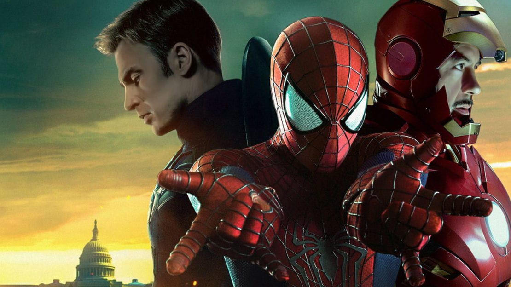
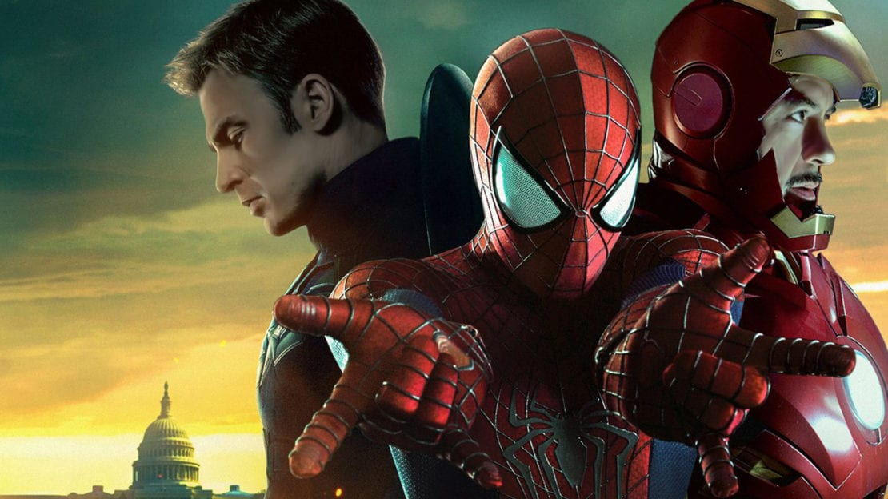

Homem-Aranha (Tom Holland), A Lenda!

Em 2016, a Disney finalmente incluiu o herói no MCU, dessa vez, interpretado por Tom Holland. A primeira aparição do ator como Peter Parker foi em Capitão América: Guerra Civil (2016), no qual ele é introduzido aos Vingadores após o convide do Homem de Ferro (Robert Downey Jr.).
 

Também apareceu nos últimos filmes dos Vingadores e se prepara para a estreia do terceiro filme do herói,
Homem-Aranha: Sem Volta para Casa, com estreia prevista para dezembro de 2021.

Tobey Maguire tinha 27 anos quando estrelou o primeiro filme, enquanto Andrew Garfield tinha 29. Embora ainda parecessem mais novos, ambos estavam distantes de serem adolescentes.
De todos os Peter Parkers, o de Holland tem o comportamento mais próximo de um adolescente. Apesar disso não agradar a todos, por muitas vezes ainda ser visto como muito infantil, esse sempre foi o objetivo. Peter ainda é um adolescente da Geração Z, aprendendo como conciliar as tarefas da escola com as obrigações como herói.
Por enquanto, o Peter Parker de Holland é o único inserido no Universo Cinematográfico da Marvel. Isso o permitiu fazer parte dos Vingadores e interagir com outros heróis, como Capitão América (Chris Evans), Doutor Estranho (Benedict Cumberbatch) e, claro, Homem de Ferro, com quem criou uma relação muito especial. Tony Stark recrutou Peter para o time de heróis e praticamente se tornou um pai, o ajudando com uniforme, equipamentos e sempre o protegendo. Além disso, as interações com outros personagens proporcionaram cenas icônicas.
Em Guerra Civil, na primeira cena ao lado dos outros Vingadores, o jovem fica nervoso ao conhecer o Capitão América e admite ser fã do herói. Enquanto em Guerra Infinita (2018), se apresenta para o Doutor Estranho como Peter Parker e depois se corrige, dizendo: "ah você está usando nome de herói. Nesse caso eu sou o Homem-Aranha."

Entre todas as versões do personagem, a de Holland é de longe a mais extrovertida. O jeito desengonçado e falante proporciona diversas cenas engraçados para o público, desde momentos embaraçosos com os Vingadores até o nervosismo na hora de falar com a garota por quem ele está apaixonado. Isso representa muito bem a essência do Peter Parker.
QUALIDADES:
Curiosamente, existe algo de profético na escolha de Tom Holland como Homem-Aranha. Recentemente os fãs resgataram uma entrevista do ator em 2013, onde o repórter pergunta se tem algum super-herói que ele gostaria de interpretar. Holland então responde: “O Homem-Aranha, daqui 10 anos, quem sabe“. Na época, Andrew Garfield era o Homem-Aranha dos cinemas, e seu segundo filme estrearia no ano seguinte. O repórter então brinca: “Vai ser o reboot do reboot?”, e Holland confirma que sim. E não é que realmente aconteceu? E nem precisou de dez anos para isso.


A Tia May de Marisa Tomei é a versão mais jovem da personagem até hoje, visto que é uma idosa nos quadrinhos e geralmente é interpretada por atrizes mais velhas. Mas a verdade é que essa ideia da Tia May idosa não é muito realista. Se Peter deveria ter quinze anos – por que sua tia seria meio século mais velha do que ele? Stephen McFeely, um dos roteiristas de Capitão América: Guerra Civil, disse que foi exatamente isso que a Marvel estava pensando na hora de escalar a nova Tia May. Se ela é a esposa do tio de Peter, por que ela estaria duas gerações à frente? E por falar em Tio Ben, os roteiristas também explicaram por que ele não está no filme. E, sim, existiu um Tio Ben, mas ele não é citado porque a ideia era manter o tom do filme sempre divertido e leve. O terno que Peter usa para ir ao baile, por exemplo, era do Tio Ben, e existia um diálogo mais emocional entre tia e sobrinho sobre isso. Porém, para manter o clima descontraído, isso foi retirado.
A relação entre Tony Stark e Peter Parker é uma das mais bonitas do MCU. O Homem de Ferro serve como figura
paterna e mentor para o Homem-Aranha, e o relacionamento dos dois foi o responsável por alguns dos momentos
mais
fofos dos filmes da Marvel.
De cenas tristes a histórias cômicas.
Quando Tony recruta Peter para participar da batalha no aeroporto em Capitão América: Guerra Civil, eles
discutem as motivações dos super-heróis. Peter demonstra entender completamente sua missão no mundo, e o
olhar
de Tony Stark diz tudo sobre o futuro relacionamento dos dois.
Tony Stark presenteia o Homem-Aranha com um novo traje, mais moderno e com várias opções tecnológicas. O
jovem
Peter Parker reage como uma criança que acabou de ganhar um novo brinquedo, agradecendo efusivamente o
mentor.
No começo de Homem-Aranha: De Volta ao Lar, Tony Stark deixa Peter em casa após a batalha de Guerra Civil.
Chegando ao prédio, Tony vai abrir a porta do carro, e Peter se confunde, achando que o herói iria
abraçá-lo.
Vários filmes depois, eles realmente se abraçam, em uma das cenas mais emocionantes do MCU.
Quando Peter se nega a deixar para lá o caso do Abutre, Tony exige o traje especial de volta. O Homem-Aranha
se
revolta, afirmando que ele não é nada sem o traje. Tony retruca, dizendo que “se você não é nada sem o
traje,
nem deveria usá-lo”. O momento foi uma das bases do relacionamento dos dois, pautado pelo respeito e
preocupação.
Após Peter derrotar o Abutre, Tony o convida para se juntar oficialmente aos Vingadores. Peter acaba não
aceitando, e Tony finge que era tudo um teste. Porém, é revelado que Tony tinha completa confiança do herói,
e
tinha até mesmo convocado uma coletiva de imprensa para apresentar o novo Vingador.
Quando os exércitos de Thanos chegam em Nova York, o Homem-Aranha quer acima de tudo se juntar à luta. Mas
Tony
só consegue pensar na segurança de Peter Parker. Ele orienta o jovem herói a permanecer em casa com a Tia
May.
No entanto, como muitas outras vezes, Peter ignora os conselhos do mentor e se junta à batalha no espaço.
Depois da morte do Homem-Aranha, Tony Stark decide se dedicar à sua família, se tornando um bom marido para
Pepper e um bom pai para Morgan. É claro que seus dias de aposentadoria não duram muito tempo. Quando Tony
descobre que existe uma chance de reverter a Dizimação de Thanos, é a lembrança de Peter Parker – por meio
de
uma foto – que faz com que ele volte a ser um herói.
No fim, as lições que Tony ensinou para Peter fazem com que ele se mantenha um herói mesmo depois de toda a
decepção e sofrimento. É o legado do sacrifício de Tony Stark que Peter carrega em Homem-Aranha: Longe de
Casa,
filme em que ele se questiona em seu papel como um dos Vingadores.
Se houve uma cena em Vingadores: Ultimato que fez os fãs chorarem, essa cena foi a “morte” do Homem-Aranha.
Peter Parker é uma das vítimas do estalo de Thanos, e se transforma em pó dizendo “Sr. Stark, não me sinto
muito
bem”. A fala foi improvisada por Tom Holland, e é uma das mais tristes e icônicas do MCU.
Em Vingadores: Ultimato, Tony Stark inicialmente não acredita que o plano da viagem no tempo é uma boa
opção, e
não quer arriscar perder a família que encontrou nos 5 anos após o estalo de Thanos. Mas ao ver uma foto de
Peter, ele muda de ideia e resolve tentar trazer os companheiros mortos de volta.
Quando Peter Parker retorna dos mortos em Vingadores: Ultimato, a reação do personagem não poderia ser mais
emocionante. Ele corre para perto do Homem de Ferro e começa a contar tudo que aconteceu durante sua
ausência,
da maneira mais entusiasmada possível. Só com o olhar Tony Stark consegue demonstrar que está nas nuvens com
o
retorno do pupilo.
Como o MCU tomou a sábia decisão de não focar na história de origem do Homem-Aranha, os fãs não puderam ver
a
morte do Tio Ben e seu discurso de “grandes poderes trazem grandes responsabilidades”. No entanto, em
Vingadores: Ultimato, os fãs ganharam um momento similar com Tony Stark. Quando ele se sacrifica para usar a
Manopla do Infinito e derrotar Thanos, alguns personagens estão ao seu lado para a despedida final. Entre
eles,
o mais emocionado é com certeza Peter Parker.


A atriz Zendaya é atacada até hoje por alguns “fãs”, por não ser ruiva como a Mary Jane dos quadrinhos. O que é uma reclamação um tanto quanto sem sentido, considerando que, apesar do mesmo apelido de MJ, a personagem de Zendaya é completamente nova. Em De Volta ao Lar, a conhecemos apenas como Michelle, e no final desse filme ela revela que seus amigos a chamam de MJ. Não fica claro os motivos da criação de Michelle Jones. Se a Marvel não teve coragem de escalar uma atriz negra como Mary Jane ou se foi algo criado para manter o suspense se ela seria ou não um interesse amoroso para Peter Parker. Mas o fato é que ela é uma nova personagem, criada para o cinema.